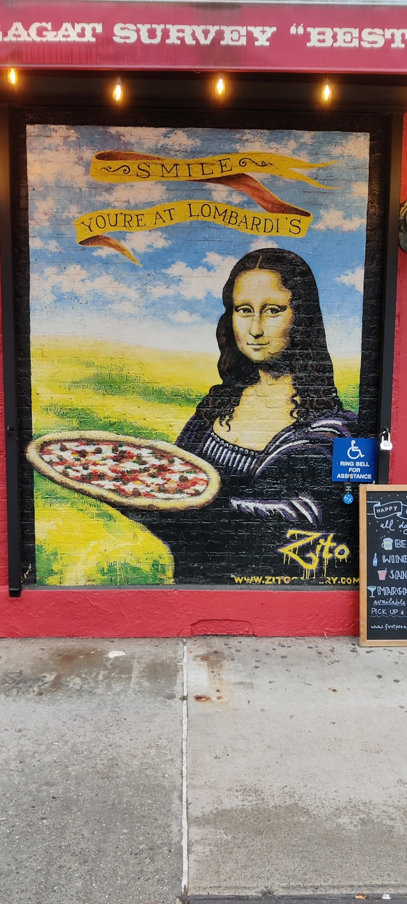

John Sparrawith in Ordine ecoambientale e sociale
La migrazione degli uccelli e il problema che può creare
Secondo un recente studio condotto da Albert Furrt, si sta riscontranto un grosso problema. Secondo lo specialista bisogna...
-
Dec 4
- 7 min read
- React
- Popular on Medium